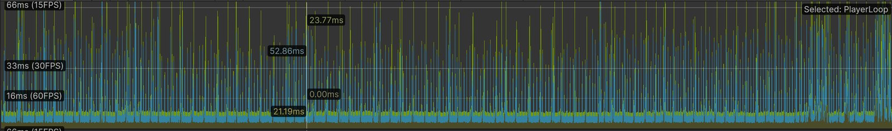
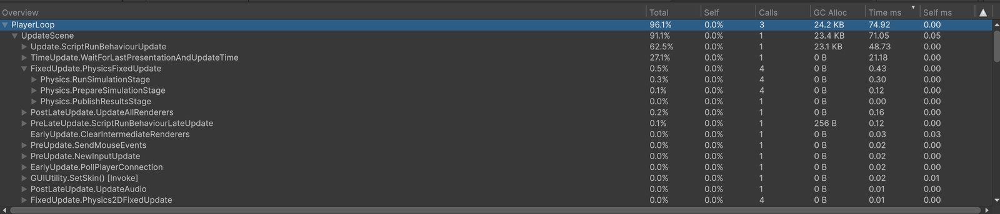
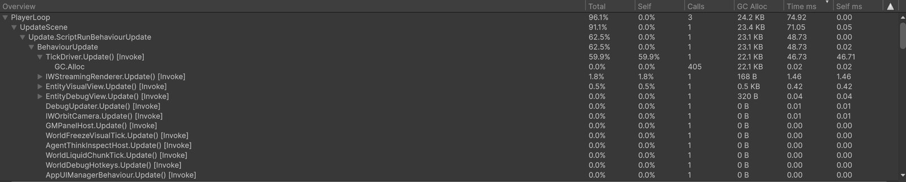
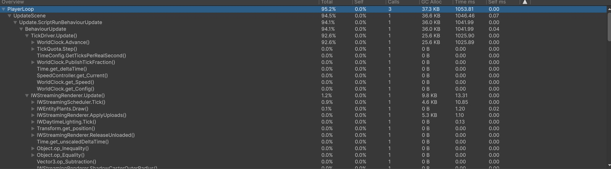
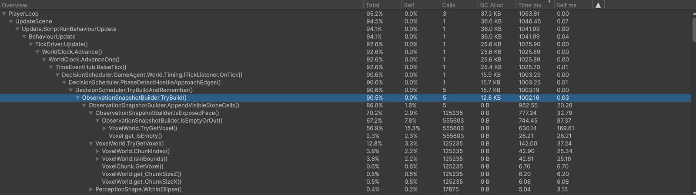
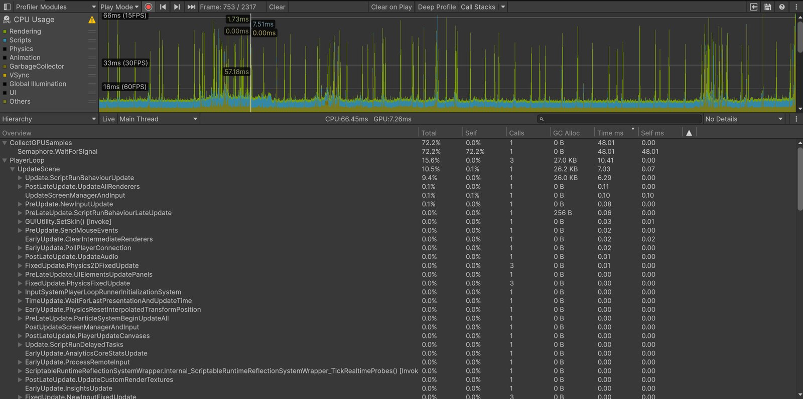
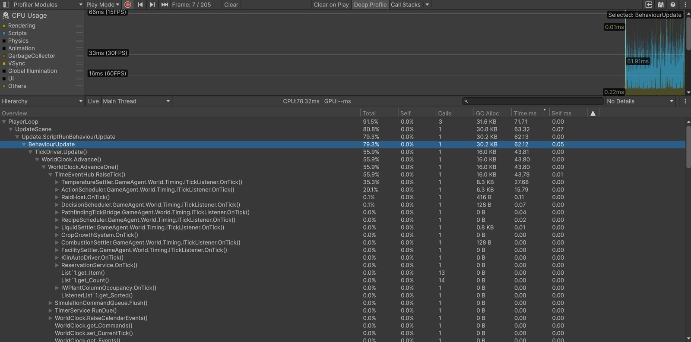
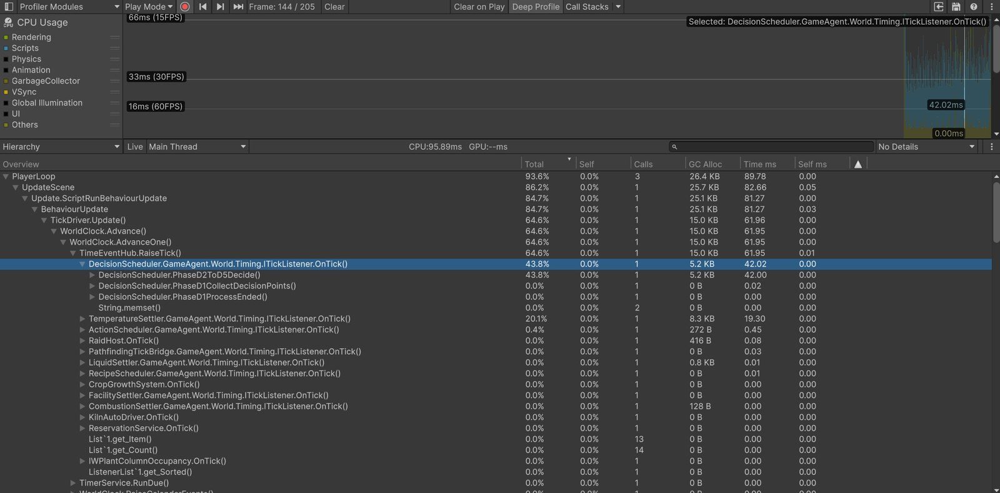

2026.10.29
技术笔记第二期——性能分析
上一篇：技术笔记第一期——感知系统
问题背景
- 在游戏多次迭代之后，游戏在测试过程中明显出现卡顿、掉帧的情况。因此进行了一次简单的性能分析，找出了原因并解决了问题。
性能基线采集
使用unity自带的性能分析工具Profiler。Profiler 有两种方式。
- 普通采集：不开启deep profile，直接打开窗口并运行游戏进行采集。这部分可以找到造成性能瓶颈的函数部分，但是可能看不到具体造成问题的部分。
- 深剖：每个方法都插桩。调用次数多的函数会被放大。只用来看「哪个函数耗时和调用次数最多」。
如下所展示的图1-3，图1为普通采集的cpu usage视图，图2和图3别展示了随机选择的两个峰值的具体调用情况。由图2-3可以看到，Update.ScriptRunBehaviourUpdate——BehaviorUpdate——TickDriver.Update()占了大部分的耗时，但是具体展开后并不能看到具体的问题函数是什么，只能看到GCalloc有400+次，但是并未占用很高耗时。



因此，进行了第二次的深度采集，打开了deep profile进行采集，由于机器性能限制，深度采集有概率导致unity崩溃，并且采集过程十分卡顿。因此本次深度采集只采集了接近100帧。如图4-5，可以看到TickDriver.Update()内部具体的函数调用。图5可以更清晰地看到各个内部函数的调用情况，具体情况可以看下表：


| 调用 | 次数 | 折合 |
|---|---|---|
进行完整感知 TryBuild() |
5 | 每人一次 |
扫描地块石头 AppendVisibleStoneCells() |
5 | 占用90%以上 |
进行椭圆判断 WithinEllipse() |
17875 | 每人约 3575 列体素 |
石头、矿脉是否露面 IsExposedFace() |
125235 | 每人约 25000 格，每列大约 7 格 |
体素邻居检查 IsEmptyOrOut() |
555603 | 每次露面检查再问大约 4.4 个邻居体素 |
- 注：世界钟的一步也不是画面的一帧。1 倍速大约每秒走 10 步。下面说的「一步」都是世界钟的一步。
原因分析
图4和图5把 TickDriver.Update() 展开之后，这一步世界钟的时间几乎都在 DecisionScheduler.OnTick() 里。再往下是 PhaseDetectHostileApproachEdges()，然后是 TryBuild()。TryBuild() 是一次感知，会扫描周围完整的信息：实体、树和花草巨石、地块上的石头和铁矿。5 个居民各进行一次，所以表里 TryBuild() 是 5 次。其中 AppendVisibleStoneCells() 占了这一步的 90% 以上。
原本的设计初衷：居民感知范围内是否出现敌人，如果出现敌人则要对威胁做出反应。第一期笔记里写的频次是：决定的时候才进行完整感知，存在事件通知时只感知事件相关的内容。但是实现除了差错。因为敌人移动、出现并没有设计单独的事件通知，于是原本应该是事件驱动的感知变成了轮询感知。
此外，虽然轮询感知是为了检测敌人，但是完整的感知还会附带对石头、矿脉进行扫描。而这两个扫描非常昂贵，因为它不在实体表里，也不能像树那样读「这一列长着什么」。它是体素上的材料。代码在椭圆范围内逐列、从脚上方 2 格扫到下方 6 格，每一格先问六个邻居有没有空，再看这一格是不是石头或铁矿。这就导致出现几十万次的查询。
解决方案
- 世界钟每走一步，不再给每个居民做一次完整感知。完整感知只留在要做决策的时候：一件事做完、空闲状态 6 秒、被打断之后重新决策时。
- 敌人改成事件驱动感知。敌人出生、消失、移动，或者正在干活的人换格、转身，才做一次判断。看见第一个敌人就打断并进入应对威胁状态，后续敌人不再逐个判断。
- 石头的扫描高度保持原来的范围，脚上方 2 格到下方 6 格，崖壁上露出来的石头和铁矿仍然算看见。改动的是查询顺序：这一格既不是石头也不是铁矿时，不再向六个邻居逐个查询。
修复后的采集
修复之后在同一条主线上又做了一次采集。图6是普通采集，图7和图8是深度采集。深度采集的毫秒会被插桩放大，这里用来看时间落在哪个函数上。

图6的模块抬头是 CPU 86.45 毫秒、GPU 7.26 毫秒。展开之后，CollectGPUSamples() 占了 48.01 毫秒。这一行是 Profiler 在向显卡读取时间戳，不是游戏里的函数。去掉这一行之后，PlayerLoop 是 10.41 毫秒，其中 Update.ScriptRunBehaviourUpdate() 是 6.29 毫秒。
图7是 deep profile 里世界钟的一步，这一步没有人在做决定。TickDriver.Update() 展开之后，DecisionScheduler.OnTick() 只有 0.07 毫秒。同一步里占得更多的是温度结算 TemperatureSettler.OnTick() 27.68 毫秒，以及动作调度 ActionScheduler.OnTick() 15.79 毫秒。

图8是 deep profile 里另一步，这一步有人在做决定。DecisionScheduler.OnTick() 是 42.05 毫秒，里面几乎全部在 PhaseD2ToD5Decide()，前面的收集和收尾接近 0。温度结算在这一步仍然有 19.30 毫秒。图8没有继续展开到 IsExposedFace()，所以修复之后的邻居查询次数没有再数一遍。

数据对比
| 项 | 修复前 | 修复后 |
|---|---|---|
普通采集 PlayerLoop |
74.92 毫秒 | 10.41 毫秒 |
其中 Update.ScriptRunBehaviourUpdate() |
71.05 毫秒 | 6.29 毫秒 |
世界钟一步里的 DecisionScheduler.OnTick() |
deep profile 下这一步的绝大部分都在做完整感知 | 不做决定的一步 0.07 毫秒；做决定的一步 42.05 毫秒 |
石头邻居查询 IsEmptyOrOut() |
一步 555603 次，5 个居民各查一遍 | 不做决定的一步不再查。做决定的一步仍会查，次数这次没有再统计 |
| 该帧分配 | PlayerLoop 24.2 KB。GC.Alloc 405 次，耗时 0.02 毫秒 |
普通帧 PlayerLoop 27.0 KB |
| 显卡 | 修复前这组采集没有单独记下 GPU 毫秒 | 7.26 毫秒。CPU 抬头里的 48.01 毫秒来自 CollectGPUSamples() |
- 注：上表普通采集各取了一帧峰值附近的读数，不是一整段录像的平均值。74.92 毫秒大约对应 13 帧/秒，10.41 毫秒大约对应 96 帧/秒。deep profile 那两行只说明时间落在哪个函数，不和 74.92 毫秒相减。
尚未进行的工作
- 第一期里写过的两件事还在：实体查询没有先按距离丢掉远处的目标；做决定时，视野里的每一列仍然会逐列查询。
- 寻找的途中，如果目标还没有选定，现在仍可能做一次完整感知。入库时找仓库、制造时找工作台，还没有改成只查询对应的那一类。
- 挖开或者挡住视线时，还没有只对相关的人再判断一次。
- 每次建造体素会导致一次卡顿。
- 图7和图8里，温度结算在 deep profile 下都占了大约两成。如果后面还要继续看性能，下一步展开
TemperatureField.Settle()。